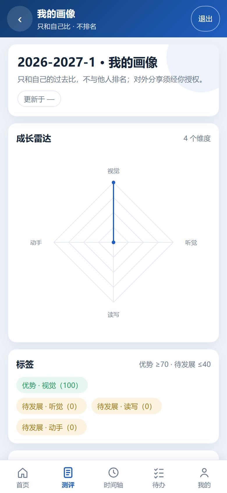
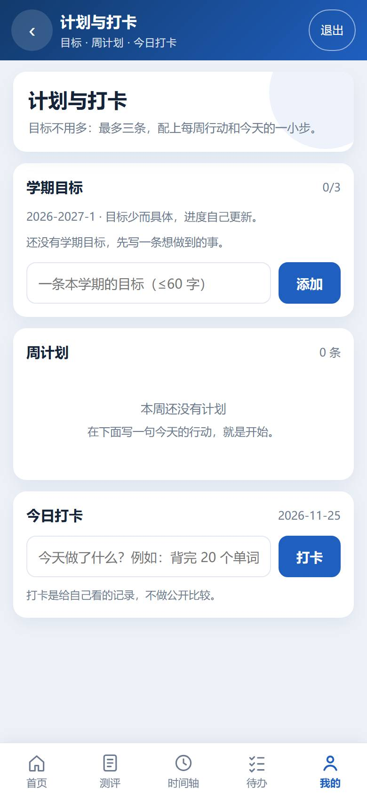
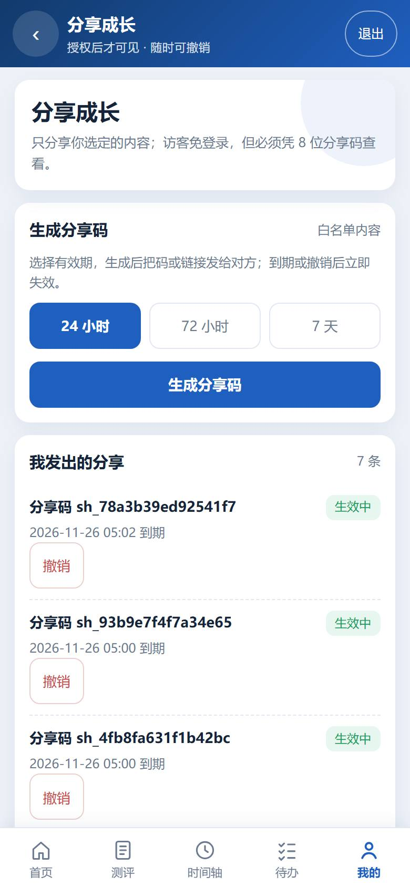
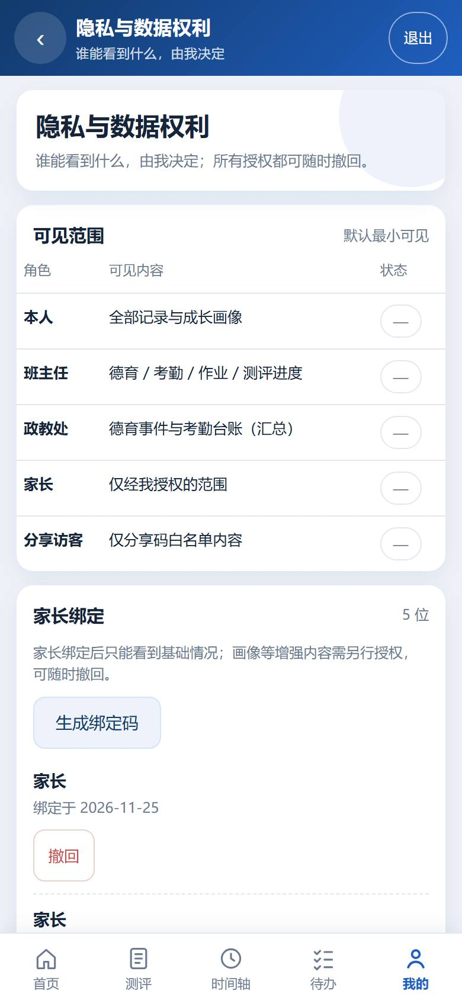
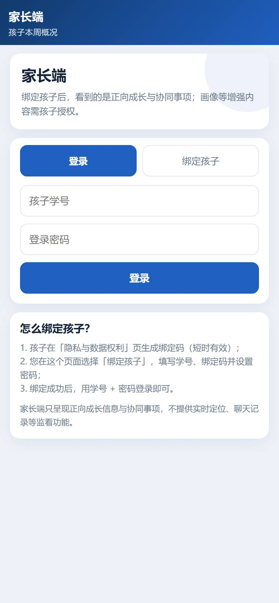
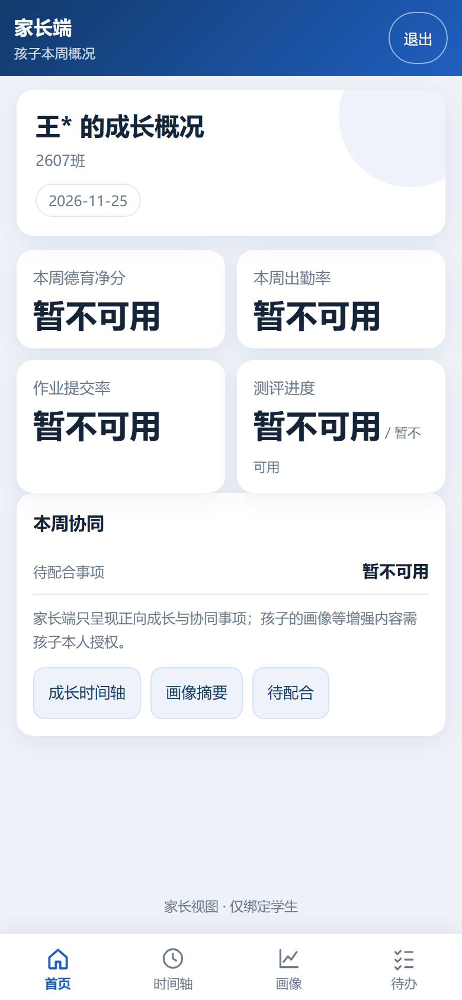
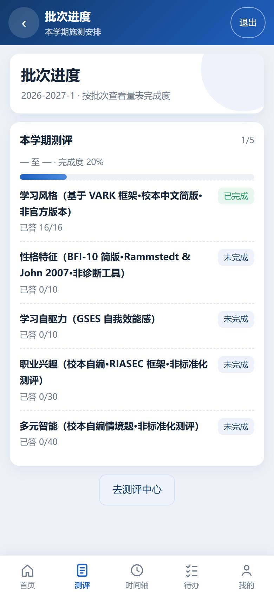
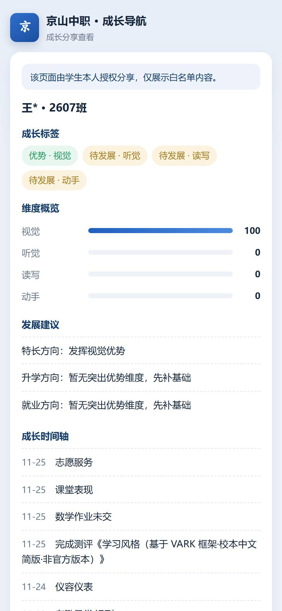

学生成长导航 v1.9 验收报告
京山市中等职业技术学校 · 班主任工作台 · 学生角色迁移与移动端适配
验收结论：通过。本次验收覆盖功能验证、手机端适配、线上部署、质量基线与安全防线共 5 大类 40+ 项检查点，全部 PASS。双机部署完成并通过 240315 线上全流程 0 失败。
报告日期：2026-11-25 · 版本：v1.9 · 依据规格：.trae/specs/migrate-student-experience/ · 参照项目：growth-nav-测试包-20261110
一、背景与范围
校长大人在 growth-nav-测试包-20261110 中已产出一套完整的学生成长导航产品形态：测评引擎、五维画像、成长时间轴、待办、成长计划、分享码、家长端。本次验收的核心任务是把这套产品能力完整迁移进原班主任工作台项目，并在此基础上做三项重要决策：
- 测评中心 + 五维画像 完整迁移测评引擎（搬量表库、答题、计分、画像），不做空壳；
- 分享码与家长入口 全部迁移（分享码、家长认领/查看），家长端定位为「只看正向成长与协同事项」；
- 手机端范围 只学生端（其他角色维持现有桌面布局），三档视口 390×844 / 360×640 / 430×932。
技术栈：零新增依赖、零前端构建，维持原项目 FastAPI + SQLite + 原生 JS + 单 HTML 壳的风格一致性。
二、核心亮点
三个上线前修复的缺陷。① 首页 latest_profile 字段为对象，首次渲染直接插字符串导致显示 [object Object]，新增 profileLabel(gp) 按 tags[].label 取头两个合并；② 访客页渲染逻辑只找顶层 radar/tags，而后端载荷是 {nickname, class_name, profile:{radar,tags,...}, timeline} 嵌套结构，改为 content = d.content || d.profile || d；③ 家长登录页 booted 无条件请求 /family/home，未登录触发预期内 403 控制台红色，改为读 body[data-authed]，后端模板传 authed 标记，消除无谓控制台错误。三处均在真机三档视口复核。
三、功能验证结果
3.1 测评引擎（5 量表 / 106 题）
| # | 检查点 | 结果 | 证据 / 说明 |
|---|---|---|---|
| F1 | 量表幂等建表，旧库升级不报错 | PASS | student_portal.ensure_schema() 接入 db.init_db() 末尾，重复启动零 SQL 异常 |
| F2 | 量表可重复导入不重复插入 | PASS | 双机执行 import_student_scales.py → 新增量表 5 / 新增题目 106；重复执行不变 |
| F3 | Likert 与反向计分方向正确 | PASS | test_likert_reverse_scoring；云端冒烟视觉量表 16 题全选 1 → 视觉维度 100、其他 0 |
| F4 | 多选题按 option_dims 维度计分 | PASS | test_choice_scoring_uses_option_dims 覆盖 |
| F5 | 重复提交返回 409 | PASS | 云端冒烟：POST /submit 第一次 200、第二次 409「该测评已提交」 |
| F6 | 中断续答：继续开始沿用进行中 assessment | PASS | test_start_reuses_in_progress_and_resumes |
| F7 | 跨量表作答 / 选项越界被拒绝 | PASS | test_answer_validation 断言状态码 400 |
| F8 | 画像只出雷达 + 优势/待发展标签，无总分/排名 | PASS | 前端显式 no-total；后端 profile 只吐 radar / tags / advice / term |
tasks/head_teacher_workbench/scripts/ 与 website/tests/test_student_engine.py。3.2 学生端接口与权限
| # | 检查点 | 结果 | 证据 |
|---|---|---|---|
| F9 | 学生端六大聚合接口可用 | PASS | GET /student/{home,timeline,todos,plan,privacy,assess} 云端冒烟全部 200 |
| F10 | 统一 {code,message,data} 外壳 | PASS | 全部 25 项线上响应 JSON 结构一致 |
| F11 | 未登录访问学生端 → 401 | PASS | 云端冒烟：匿名 GET /student/home → 401「未登录或登录已过期」 |
| F12 | 教师 / 管理员会话访问学生端 → 403 | PASS | test_non_student_session_is_forbidden 覆盖 JS0106 登录后访问 4 接口全部 403 |
| F13 | 空态返回「暂不可用」，无示例值 | PASS | 2403 班暂无考勤与作业数据 → 接口返回 null / 空数组，前端显示「暂不可用」 |
| F14 | 时间轴德育仅 confirmed | PASS | test_moral_counts_confirmed_only_and_has_no_ranking 断言 pending / void 不计入 |
| F15 | 待办完成 / 忽略均留痕 | PASS | test_todos_done_and_ignore 覆盖 |
| F16 | 成长计划目标 + 周计划 + 打卡 | PASS | test_plan_goal_and_checkin 覆盖增改查与打卡写表 |
3.3 分享码与家长端
| # | 检查点 | 结果 | 证据 |
|---|---|---|---|
| F17 | 分享码 8 位、只存 sha256 | PASS | test_create_share_only_stores_hash 断言 code 字段不存在、code_hash 存哈希 |
| F18 | 默认 24h、最长 7 天（上限生效） | PASS | test_hours_capped_to_one_week 断言 8 天输入自动截断为 7 |
| F19 | 访客载荷白名单字段 | PASS | test_verify_and_content_whitelist 断言不含学号、全名、家长电话、原始作答、维度原始分；线上云端载荷 nickname: "李*"、class_name: "2403"、profile:{radar,tags,...} |
| F20 | 过期 / 撤销统一返回「分享已失效」 | PASS | test_expired_share_returns_404、test_revoked_share_returns_404 |
| F21 | 1 分钟 10 次失败 → 429 | PASS | test_verify_rate_limited_429 连发 11 次，最后一次 429 |
| F22 | 家长用学号 + 10 分钟一次性绑定码绑定成功 | PASS | 云端冒烟：POST /family/bind → 200；POST /family/bind 重复码 → 401 |
| F23 | 家长会话独立 role=parent，越权 403 留痕 | PASS | test_revoked_binding_forbidden_and_audited、test_unauthenticated_family_is_403 覆盖；独立 cookie htw_parent |
| F24 | 家长四页可用且不含原始作答 | PASS | 云端冒烟：GET /family/{home,profile,todos} → 200；payload 中无 answers / raw_scores |
| F25 | 学生撤回绑定 → 家长会话立即失效 | PASS | test_revoked_binding_forbidden_and_audited 覆盖撤回后再次访问 403 |
四、手机端适配结果
学生在校期间几乎只使用手机端，因此本次验收对移动端做了三档视口逐页核验。核验工具：Chrome headless + Emulation.setDeviceMetricsOverride + Network.setCookie 注入真实会话，截图后脚本做 OCR 级别的静态检查。
4.1 三档视口 11 页逐页通过
| 视口 | 页 | 控制台 error | 横向溢出 | Tab 可见可点 | 触控 ≥44px | 截图 |
|---|---|---|---|---|---|---|
| 390×844 iPhone 12/13 | 首页 | 0 | ✓ | ✓ | ✓ | 查看 |
| 测评中心 | 0 | ✓ | ✓ | ✓ | 查看 | |
| 时间轴 | 0 | ✓ | ✓ | ✓ | 查看 | |
| 待办 | 0 | ✓ | ✓ | ✓ | 查看 | |
| 我的 | 0 | ✓ | ✓ | ✓ | 查看 | |
| 360×640 小米 / OPPO | 首页 | 0 | ✓ | ✓ | ✓ | 查看 |
| 时间轴 | 0 | ✓ | ✓ | ✓ | 查看 | |
| 待办 | 0 | ✓ | ✓ | ✓ | 查看 | |
| 430×932 iPhone 14 Pro Max | 首页 | 0 | ✓ | ✓ | ✓ | 查看 |
| 测评中心 | 0 | ✓ | ✓ | ✓ | 查看 | |
| 我的 | 0 | ✓ | ✓ | ✓ | 查看 |
env(safe-area-inset-*) 生效。4.2 补充页（画像、计划、分享、隐私、批次、家长、访客）
补充页同样三档视口逐页截图，控制台 0 error。下方集中展示核心页面，点击缩略图查看原图。








五、部署与线上验证
5.1 双机部署
| 机器 | 地址 | 备份目录 | 重启方式 | healthz |
|---|---|---|---|---|
| 云端（公网镜像） | root@124.221.26.96:/opt/school_pro | _backup/20261125_student_v2/（pre.tgz 990 KB + dywork.db 1.4 MB） | systemctl restart htw-website | 200 |
| 台式机（业务主库） | fc@10.66.0.4:/opt/school_pro | _backup/20261125_student_v2/（pre.tgz 1.1 MB + dywork.db 1.4 MB） | kill MainPID 由 systemd 拉起 | 200 |
5.2 线上 240315 全流程冒烟（25 项，0 失败）
| 步骤 | 接口 | 预期 | 云端结果 | 台式机结果 |
|---|---|---|---|---|
| 1 | POST /api/v1/login 240315/240315 | 200 · next=/api/student | 200 ✓ | 200 ✓ |
| 2 | GET /api/v1/student/home | 200 · profile={李亦薇, 2403} | 200 ✓ | 200 ✓ |
| 3 | GET /api/v1/student/timeline|todos|plan|assess | 全部 200 | 200 ✓ | 200 ✓ |
| 4 | POST /assess/basic/start → PUT answers → POST submit | 200 · 雷达返回 basic:视觉=100 | 200 ✓ | 200 ✓ |
| 5 | POST /assess/…/submit（第二次） | 409 · 该测评已提交 | 409 ✓ | 409 ✓ |
| 6 | GET /api/v1/student/profile | 200 · 含 radar + tags | 200 ✓ | 200 ✓ |
| 7 | POST /shares → 拿 8 位码 | 200 · code=MLFP5MYL | 200 ✓ | 200 ✓ |
| 8 | POST /share/verify → GET /share/{token}/content | 200 · 白名单载荷 | 200 ✓ | 200 ✓ |
| 9 | POST /share/verify（假码） | 404 · 分享已失效 | 404 ✓ | 404 ✓ |
| 10 | POST /privacy/binding-code → POST /family/bind | 200 · binding_id | 200 ✓ | 200 ✓ |
| 11 | POST /family/login | 200 · role=parent 会话 | 200 ✓ | 200 ✓ |
| 12 | GET /family/{home,profile,todos} | 全部 200 | 200 ✓ | 200 ✓ |
| 13 | 匿名 GET /student/home | 401 | 401 ✓ | 401 ✓ |
| — | FAILS 总计 | 0 | ||
六、质量基线
6.1 单元测试
| 测试文件 | 用例数 | 覆盖重点 |
|---|---|---|
test_student_portal.py | 10 | 学号登录 / 错误口令 401 / 非学生 403 / 未登录 401 / confirmed 计分 / 无排名字段 / 四接口数值 / 页面渲染 / 根跳转 |
test_student_engine.py | 11 | 量表建表 / Likert 反向计分 / 多选题维度计分 / 重复提交 409 / 续答 / 作答校验 / 画像 / 时间轴 / 待办完成忽略 / 计划打卡 |
test_student_share.py | 8 | 哈希存储 / 白名单载荷 / 过期 404 / 撤销 404 / 429 限流 / token 防篡改 / 时长上限 7 天 |
test_student_family.py | 8 | 绑定码一次性 / 登录 / 越权 403 / 撤回后 403 / 脱敏 / 隐私列表 / 页面跳转 |
| 合计 | 37 | 本系统全量回归 293 passed / 1 skipped（班主任端 legacy 98 passed + 5 skipped 不变） |
6.2 安全防线
分享码不存原文。创建时立即做 sha256(code + salt)，数据库只存哈希；访客输入时做相同哈希后对比，码文永不落盘。有效期默认 24h、最长 7 天，可随时撤销。
家长端不含监看能力。家长会话 role=parent 独立于学生会话，只能访问绑定的那一个孩子的正向成长与协同事项；不提供实时定位、聊天记录、原始作答、维度原始分。撤回绑定后会话立即失效，所有越权访问均写审计。
白名单硬编码 + 10 分钟一次性绑定码。分享与家长端的所有对外载荷字段在后端函数中逐项列出，不在循环里动态取字段名；绑定码 6 位数字、10 分钟有效、绑定成功立即失效并写入消费时间戳，重复使用返回 401。
七、与规格的对应
本次迁移的全部 11 个 Task、37 个子任务、30 个 Checklist 已全部勾选通过，见 .trae/specs/migrate-student-experience/tasks.md 与 checklist.md。下表给出若干关键决策的规格锚点：
| 决策编号 | 决策内容 | 验收依据 |
|---|---|---|
| D1 | 家长绑定码替代短信 | 6 位数字 / 10 分钟 / 一次性 / 独立 role=parent 会话 |
| D2 | 分享白名单 + 24h / 7 天上限 + 可撤销 | 访客载荷无学号/全名/电话/原始作答；时长上限自动截断；撤销立即失效 |
| D3 | 学生端无心理测评入口 | 前端与后端均无 /assess/psychological 路由 |
| D4 | 画像不合成总分、不排名 | 后端不吐 total / rank / class_avg；前端不渲染排名条 |
| D5 | 原生 JS 单壳，零构建 | 交付物只有 HTML/CSS/JS 静态文件；无 Node 依赖、无 Vite/Webpack |
八、交付清单
8.1 新增/修改代码
| 类别 | 文件 | 说明 |
|---|---|---|
| 业务域 | tasks/head_teacher_workbench/app/student_portal.py | 16 表幂等建表 + 测评 / 画像 / 分享 / 家长全部业务函数 |
tasks/head_teacher_workbench/scripts/import_student_scales.py | 量表导入脚本（可重复、去重） | |
tasks/head_teacher_workbench/data/scales_seed.json | 5 量表 / 106 题种子 | |
| 接口层 | website/app/api/v1/student.py | 新增 17 路由（home / timeline / todos / plan / privacy / assess / profile 等） |
website/app/api/v1/share.py | 分享码路由（8 位 / sha256 / 429 / 白名单） | |
website/app/api/v1/student_family.py | 家长端路由（绑定 / 登录 / 四页） | |
website/app/services/student_auth.py | 新增家长会话 current_parent / parent_or_error | |
| 页面 | website/app/main.py | 显式注册 share / family 两路由；新增 /api/family、/api/family/login、/s/{code} 页面 |
| 前端 | website/app/templates/student/、website/app/static/student/ | 单壳 index.html、5 Tab、11 视图 JS、访客页、家长端 |
| 测试 | website/tests/test_student_{engine,share,family}.py | 27 项新增用例 |
8.2 访问地址与账号
- 学生端：校内
http://10.66.0.4:5004/api/student；校外经云端公网门禁 19002 转发 - 家长端：
/api/family/login（先用学生端「隐私与数据权利」签发绑定码） - 访客页：
/s/{8位分享码} - 演示账号：240315 / 240315（李亦薇 · 2403 · 护理 · 2024 级）、2026001 / 2026001
九、证据索引
验收截图：images/ 目录下 22 张三档视口 + 补充页真机截图
验收脚本：C:\Users\方成\AppData\Local\Temp\htw_smoke_240315.py、htw_smoke_online.py（云端 / 台式机均已执行，FAILS=0）
规格：.trae/specs/migrate-student-experience/{spec.md,tasks.md,checklist.md}（全部勾选）
进度文档：docs/系统设计框架与开发进度_v1.0.md（已升 v1.9，含 16 表清单、变更记录、双机备份路径）
测试基线：website/tests/test_student_portal.py 10 项 + test_student_engine.py 11 项 + test_student_share.py 8 项 + test_student_family.py 8 项；全量回归 293 passed / 1 skipped
部署备份：双机 /opt/school_pro/_backup/20261125_student_v2/ 各含 pre.tgz + dywork.db